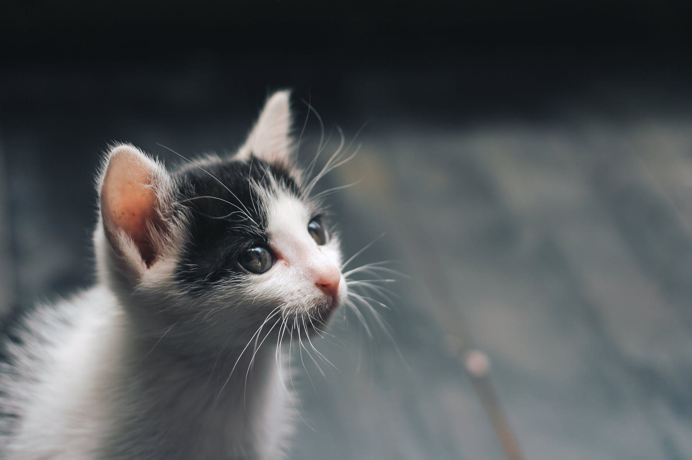

เปอร์เซีย เป็นแมวที่มีถิ่นกำเนิดอยู่ในแถบเปอร์เซีย หรืออิหร่าน ถูกนำไปเลี้ยงในประเทศต่าง ๆ ทั้งใน ยุโรปและอเมริกาเป็นเวลาเกือบร้อยปีมาแล้ว สำหรับประเทศไทยจัดเป็นแมวต่างประเทศ พันธุ์แรกที่ถูกนำมาเผยแพร่ เนื่องจากเป็นแมวที่มีอุปนิสัยอ่อนโยน สุขุมเข้ากับคนง่าย มี ความร่าเริงซุกซน ชอบประจบประแจงและมีไหวพริบ นอกจากนี้ยังมีการอ้างอิงต้นกำเนิดของแมวเปอร์เซียว่ามีมานานตั้งแต่ช่วง 1,684 ปีก่อนคริสตกาล ด้านบรรพบุรุษแมวเปอร์เซียตัวแรกที่ได้รับการบันทึกไว้เป็นหลักฐานถูกนำเข้ามายังทวีปยุโรปในปี ค.ศ. 1620 เป็นแมวขนสีเทาจากเมืองโคราซาน (Khorasan) ประเทศเปอร์เซีย เจ้าตัวนี้ได้ไปอยู่ยังประเทศอิตาลี และแมวขนยาวสีขาวจากเมืองอังกอร่า (ปัจจุบันคือเมือง Ankara) ประเทศตุรกี ได้ไปอยู่ยังประเทศฝรั่งเศส
คุณภาพระดับมาตรฐานสากล ก้าวหน้าด้านเทคโนโลยี สิ่งแวดล้อมดี ผู้เรียนมีคุณธรรม มีจิตสาธารณะ ดำรงชีวิตอย่างมีความสุข
พัฒนาผู้เรียนให้มีคุณภาพตามมาตรฐานการศึกษา และมาตรฐานสากล มีสุขภาพกายและสุขภาพจิตที่สมบูรณ์ มีคุณธรรม จริยธรรม รักความเป็นไทย และรับผิดชอบต่อสังคม ส่งเสริมครูและบุคลากรทางการศึกษาให้มีความรู้ ความสามารถ มีคุณภาพตามมาตรฐานวิชาชีพ พัฒนาหลักสูตรสถานศึกษา เพื่อสนองต่อความแตกต่างระหว่างบุคคล ให้ผู้เรียนมีความรู้ความสามารถตามมาตรฐานสากล สู่ความเป็นเลิศทางวิชาการอย่างยั่งยืน พัฒนาสื่อเทคโนโลยีและนวัตกรรมทางการศึกษา เพื่อพัฒนาคุณภาพทางการศึกษา จัดกระบวนการการเรียนการสอน การวัดและประเมินผลที่หลากหลายอย่างมีคุณภาพ เอื้อต่อการพัฒนาผู้เรียนอย่างรอบด้าน พัฒนาการบริหารจัดการศึกษาอย่างมีระบบตามหลักธรรมาภิบาล พัฒนาสถานศึกษาให้เป็นแหล่งเรียนรู้และมีสภาพแวดล้อมที่เอื้อต่อการเรียนรู้อย่างมีคุณภาพ ประสานความร่วมมือระหว่างโรงเรียน ผู้ปกครอง ชุมชน และสร้างภาคีเครือข่าย เพื่อสนับสนุนการจัดการศึกษา
มีคุณธรรม มีจิตสาธารณะ ดำรงชีวิตอย่างมีความสุข
คุณภาพระดับมาตรฐานสากล ก้าวหน้าด้านเทคโนโลยี สิ่งแวดล้อมดี ผู้เรียนมีคุณธรรม มีจิตสาธารณะ ดำรงชีวิตอย่างมีความสุข
พัฒนาผู้เรียนให้มีคุณภาพตามมาตรฐานการศึกษา และมาตรฐานสากล มีสุขภาพกายและสุขภาพจิตที่สมบูรณ์ มีคุณธรรม จริยธรรม รักความเป็นไทย และรับผิดชอบต่อสังคม ส่งเสริมครูและบุคลากรทางการศึกษาให้มีความรู้ ความสามารถ มีคุณภาพตามมาตรฐานวิชาชีพ พัฒนาหลักสูตรสถานศึกษา เพื่อสนองต่อความแตกต่างระหว่างบุคคล ให้ผู้เรียนมีความรู้ความสามารถตามมาตรฐานสากล สู่ความเป็นเลิศทางวิชาการอย่างยั่งยืน พัฒนาสื่อเทคโนโลยีและนวัตกรรมทางการศึกษา เพื่อพัฒนาคุณภาพทางการศึกษา จัดกระบวนการการเรียนการสอน การวัดและประเมินผลที่หลากหลายอย่างมีคุณภาพ เอื้อต่อการพัฒนาผู้เรียนอย่างรอบด้าน พัฒนาการบริหารจัดการศึกษาอย่างมีระบบตามหลักธรรมาภิบาล พัฒนาสถานศึกษาให้เป็นแหล่งเรียนรู้และมีสภาพแวดล้อมที่เอื้อต่อการเรียนรู้อย่างมีคุณภาพ ประสานความร่วมมือระหว่างโรงเรียน ผู้ปกครอง ชุมชน และสร้างภาคีเครือข่าย เพื่อสนับสนุนการจัดการศึกษา
มีคุณธรรม มีจิตสาธารณะ ดำรงชีวิตอย่างมีความสุข